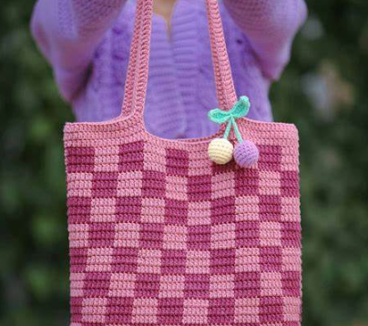

I have a passion for creativity, ranging from crocheting to scrapbooking. My love for film and media has driven me to explore the world of documentary filmmaking.
Creative Interests
Hobbies
- Crochet 
- Jewelry Making
- Scrapbooking
- Video Editing
I have a passion for creativity, ranging from crocheting to scrapbooking. My love for film and media has driven me to explore the world of documentary filmmaking.